| Capital | Guatemala City |
| Official language(s) | Spanish |
| Demonym | Guatemalan |
| Area | 108,889 km2 |
| Population (2020) | 17,92 millions |
| Currency | Quetzal |
| Time zone | UTC-6 (CST) |
| Calling code | +502 |
| Driving side | Right |
| Ethnic group | Percentage |
|---|---|
| Ladino | 56,01 |
| Maya | 41,66 |
| Xinca | 1,77 |
| Afro-Guatemalan | 0,19 |
| Garifuna | 0,13 |
| Foreign | 0,24 |
Guatemalan cuisine reflects the multicultural nature of Guatemala, in that it involves food that differs in taste depending on the region. Guatemala has 22 departments (or divisions), each of which has very different food varieties.
Many traditional foods are based on Maya cuisine and prominently feature corn, chilis and beans as key ingredients. Various dishes may have the same name as dishes from a neighboring country, but may in fact be quite different for example the enchilada or quesadilla, which are nothing like their Mexican counterparts.
The history of Guatemala begins with the Maya civilization (2,000 BC – 250 AD), which was among those that flourished in their country. The country's modern history began with the Spanish conquest of Guatemala in 1524.
Most of the great Classic-era (250 – 900 AD) Maya cities of the Petén Basin region, in the northern lowlands, had been abandoned by the year 1000 AD. The states in the Belize central highlands flourished until the 1525 arrival of Spanish Conquistador Pedro de Alvarado. Called "The Invader" by the Maya peoples, he immediately began subjugating the Indian states.
Guatemala was part of the Captaincy General of Guatemala for nearly 330 years This Captaincy included what is now Chiapas in Mexico and the modern countries of Guatemala, El Salvador, Honduras, Nicaragua and Costa Rica. The Capitania became independent in 1821 and became a part of the First Mexican Empire until 1823. From 1824 it was a part of the Federal Republic of Central America. When the Republic dissolved in 1841, Guatemala became fully independent.
In the late 19th and early 20th century, Guatemala's potential for agricultural exploitation attracted several foreign companies, most prominently the United Fruit Company (UFC). These companies, supported by the country's authoritarian rulers, and the United States government through their support for brutal labor regulations and massive concessions to wealthy landowners. In 1944, the policies of Jorge Ubico led to a popular uprising that began the ten-year Guatemalan Revolution. The presidencies of Juan José Arévalo and Jacobo Árbenz saw sweeping social and economic reforms, including a significant increase in literacy and a successful agrarian reform program.
The progressive policies of Arévalo and Árbenz led the United Fruit Company to lobby the United States government for their overthrow, and a US-engineered coup in 1954 ended the revolution and installed a military regime. This was followed by other military governments, and jolted off a civil war that lasted from 1960 to 1996. The war saw human rights violations, including a genocide of the indigenous Maya population by the military. Following the war's end in 1997, Guatemala re-established a representative democracy. It has since struggled to enforce the rule of law and suffers a high crime rate and continued extrajudicial killings, often executed by security forces.
 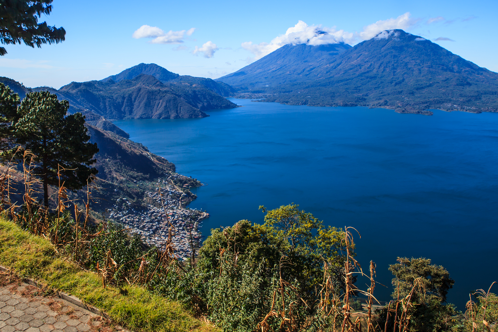
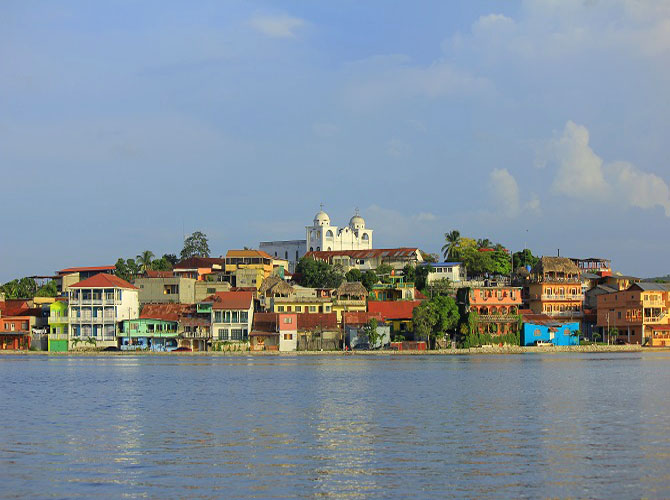
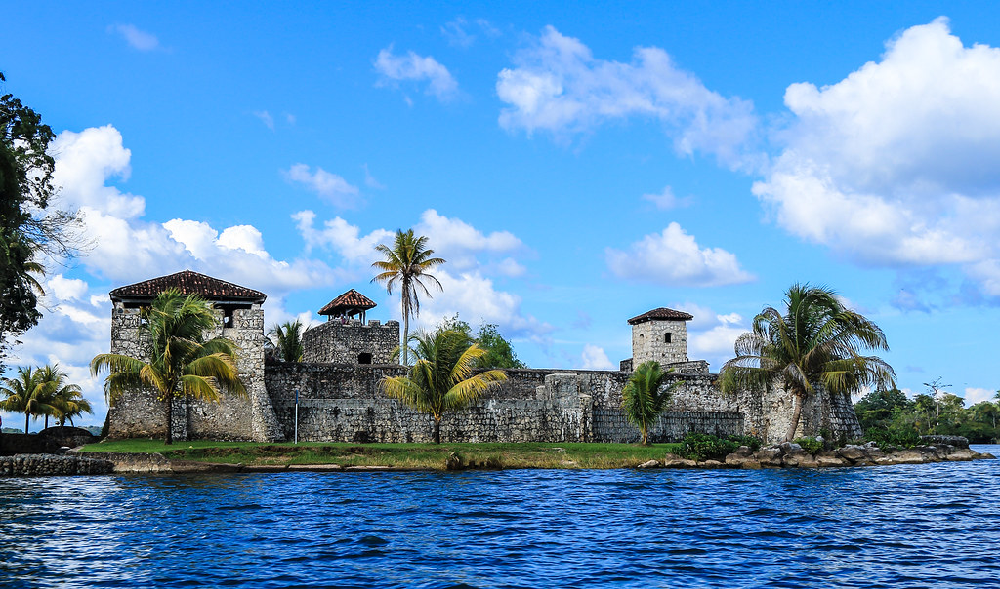
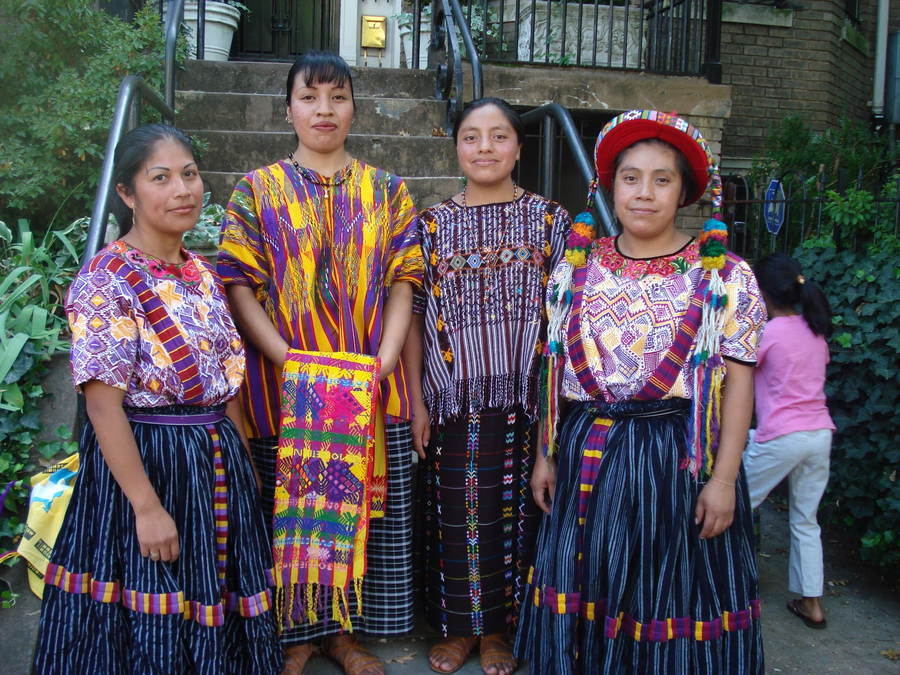
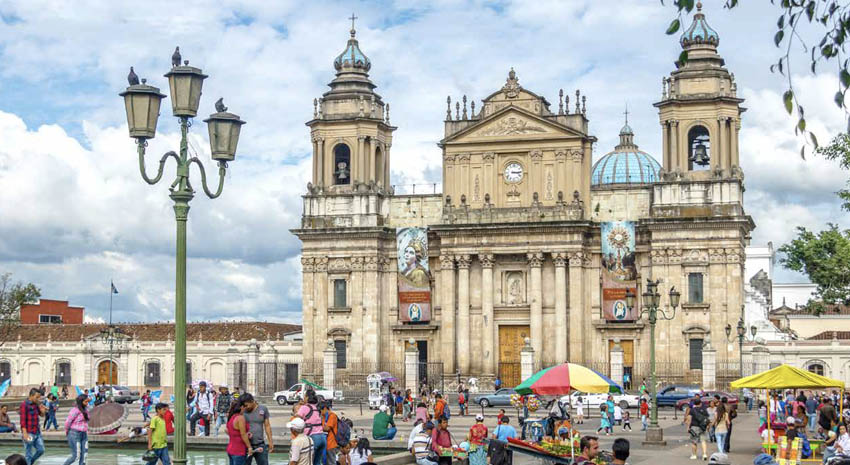
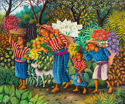
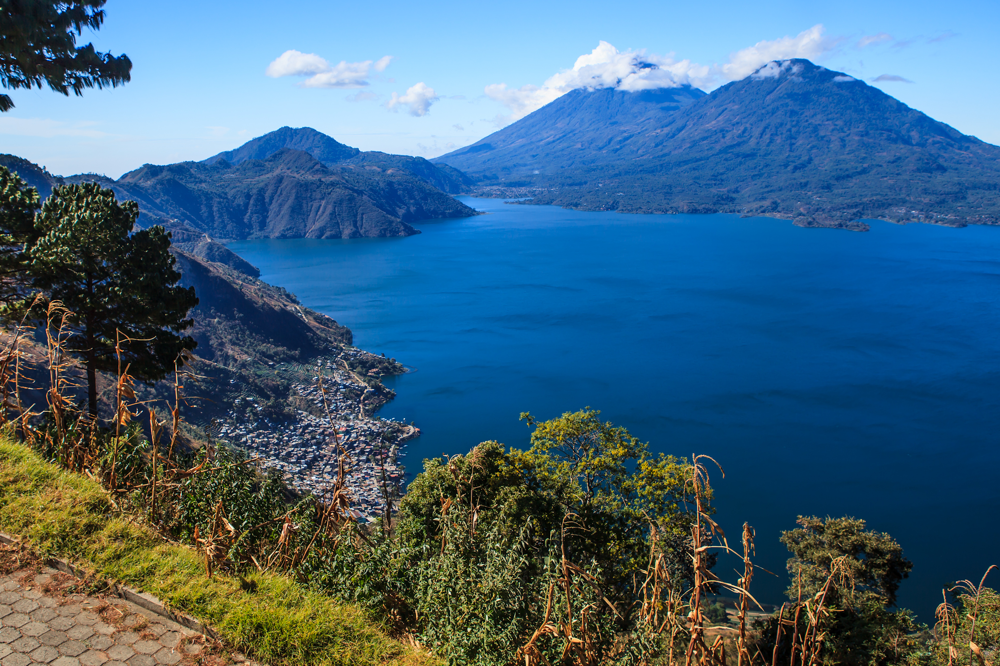
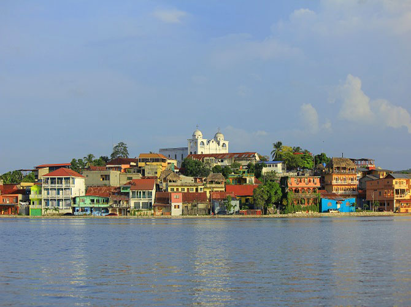
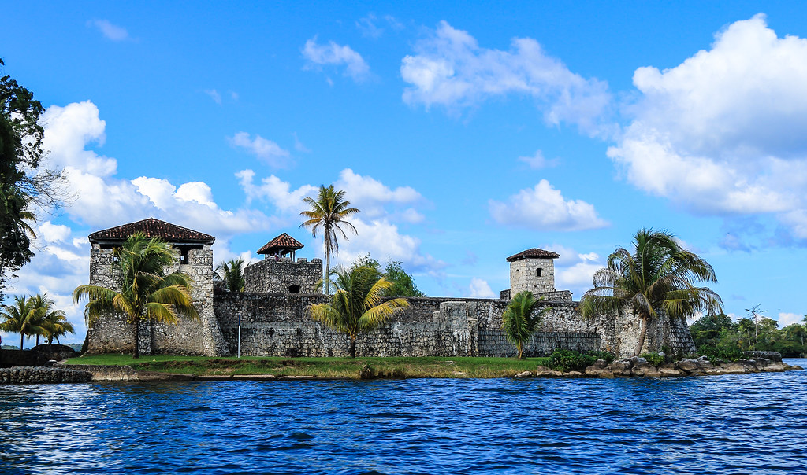
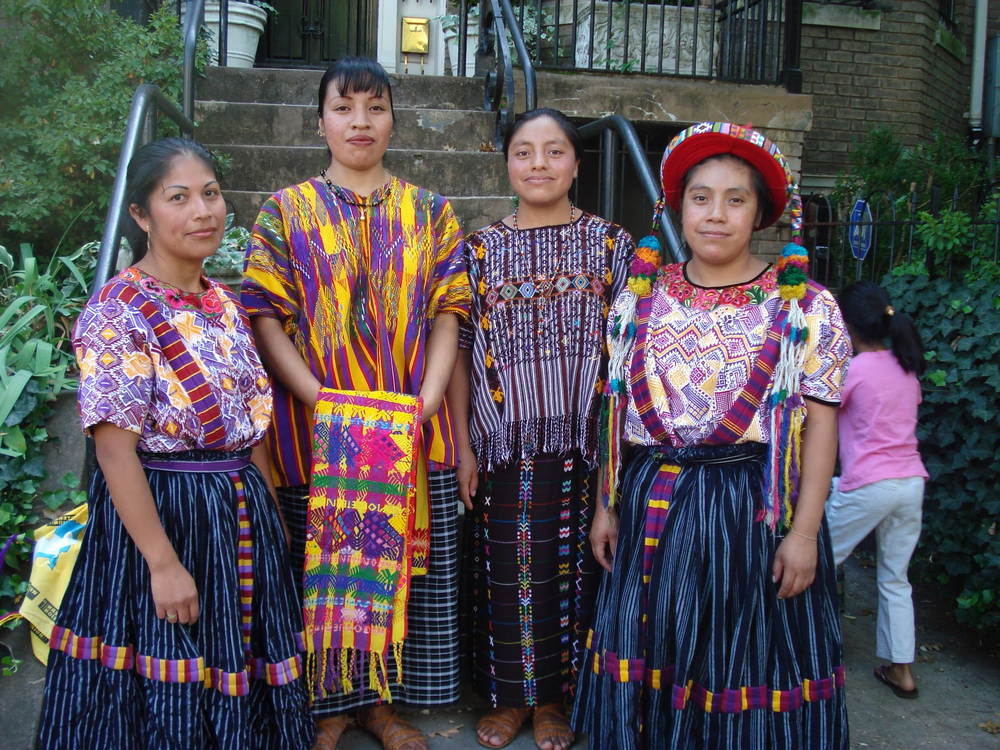
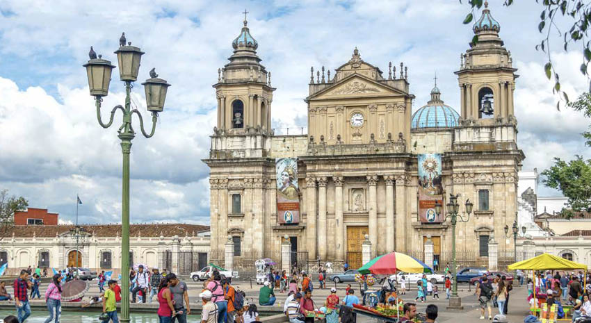
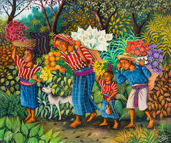
https://en.wikipedia.org/wiki/Guatemala
https://en.wikipedia.org/wiki/Culture_of_Guatemala
https://en.wikipedia.org/wiki/History_of_Guatemala
Do you have further questions? Or want to get in touch regarding a tour? Leave your contact info, and we will get in touch with you.